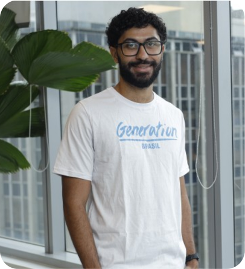
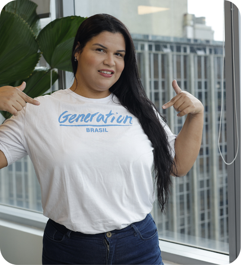

Scouting intelligence para negócios esportivos
Toda decisão
merece entrar em campo.
Transformamos dados dispersos do futebol em leituras claras para identificar oportunidades, reduzir riscos e criar conexões de marca que fazem sentido.
No esporte, intuição abre caminhos. Dados mostram onde ir.
Clubes, marcas e agências precisam decidir rápido: onde investir, com quem conversar e quais movimentos têm maior chance de gerar resultado.
A Fut.Analytica organiza o cenário em uma plataforma de inteligência acessível, conectando desempenho em campo a oportunidades de negócio.
analisadas
comparação
de marcas
de decisão
Análises que saem da tabela e chegam à estratégia.
Gemas escondidas
Localizamos clubes fora do topo que combinam produção ofensiva e potencial de visibilidade. São oportunidades que podem passar despercebidas em uma leitura superficial.
Investimento inteligente ↗
Risco & consistência
Comparamos três temporadas para medir estabilidade, volatilidade e desempenho. Assim, o investimento não depende apenas do momento atual de um clube.
Decisão com segurança ↗
Comparativo de ligas
Agregamos gols marcados, gols sofridos e média de gols por partida por liga e temporada. É a leitura que mostra onde o espetáculo tem mais volume e como ele evolui ao longo do tempo.
Contexto de mercado ↗
Mapa de marcas
Cruzamos o desempenho dos clubes da Série A com seus fornecedores esportivos para revelar espaços comerciais e priorizar conversas de patrocínio.
Prospecção assertiva ↗
Futebol feminino
Integramos o Brasileirão Feminino ao radar para acompanhar eficiência, resiliência no mata-mata e evolução de clubes em um ciclo de três anos.
Visão de futuro ↗
Do dado bruto ao
próximo grande passe.
Um processo estruturado para que cada insight tenha contexto, rastreabilidade e utilidade de negócio.
Coletamos
Consumimos classificações e dados de competições por API, com tratamento para cenários de indisponibilidade.
Organizamos
Transformamos JSONs complexos em uma base relacional limpa, pronta para cruzamentos confiáveis.
Analisamos
Views de negócio traduzem números em critérios de oportunidade, risco e desempenho.
Decidimos
Dashboards e leituras diretas apoiam quem precisa transformar estratégia em ação.
EM DESTAQUE. MARCAS E CLUBES
Qual é a próxima
conexão vencedora?
O índice de oportunidade considera posição na tabela e o cenário atual de fornecimento esportivo. O resultado é uma lista priorizada de clubes para abordagem comercial.
Quero conhecer o produto →ALTA
OPORTUNIDADE
OPORTUNIDADE
O jogo em números,
em um só painel.
Explore os indicadores, filtre competições e acompanhe os recortes que orientam a nossa análise. Caso o painel solicite acesso, entre com a conta autorizada da equipe.
Seu dashboard interativo está pronto para ser exibido aqui.
Abrir no Power BI ↗Uma equipe que joga
com dados e propósito.
Conheça as pessoas que transformam dados esportivos em leituras relevantes para clubes, marcas e torcedores. Toque em uma foto para ver o LinkedIn.
Vamos nos conectar no LinkedIn? @caioodiniz
Caio
Dados e inteligência
Vamos nos conectar no LinkedIn? @ericfariasds
Eric
Engenharia de dados
Vamos nos conectar no LinkedIn? @lucascostadados
Lucas
Análise de negócio

Vamos nos conectar no LinkedIn? @matheus-machado
Matheus
Visualização de dados
Vamos nos conectar no LinkedIn? @miguel-lucas
Miguel
Produto e experiência

Vamos nos conectar no LinkedIn? @tassianascimento
Tassia
Pesquisa e estratégia
Vamos conversar?